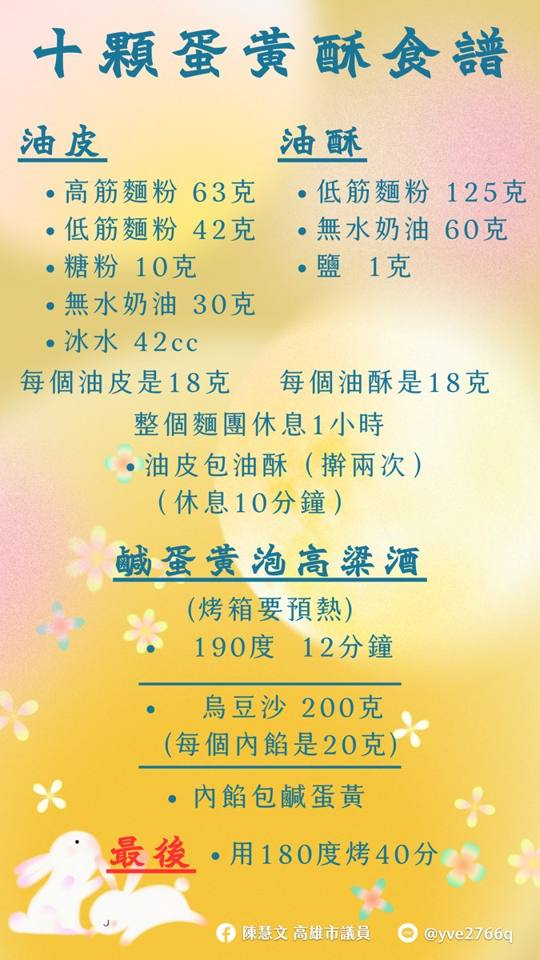

跳到主要內容
高雄市議員 · 鳳山區
服務專線
07-821-2536
文
✳
陳慧文
高雄市議員
CHEN HUI-WEN・
鳳山區
選單
☰
地方與議題
查地方與進度
依主題延伸閱讀
慧文的工作
議會公開紀錄
最新動態與媒體報導
服務處新聞稿
公開行程與活動
網站更新摘要
關於慧文
認識慧文
政治獻金
服務處
聯絡與服務時間
公益律師時間表
洽詢準備指南
案件表單
2026 選舉
2026 選舉資訊
政見原文與追蹤
活動回顧 · 2024
議起做月餅
中秋節的手作時光，與大家分享做月餅的樂趣。
活動紀錄
以下為活動現場照片，一起回顧中秋節的手作時光。

返回活動列表 →